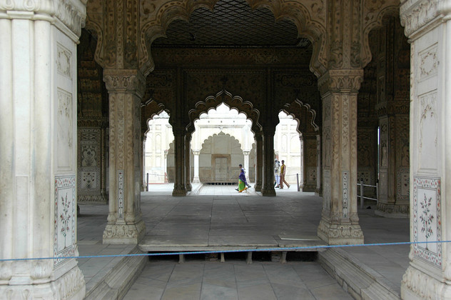

23/12/2007
Delhi
Unserer Ankunft in Delhi ging ein mal wieder tolles Flugerlebnis voraus. Flugzeug wurde kurzfristig gewechselt, alles überfüllt und verspätet, Sitze kaputt und die unfähigste Crew waren die Highlights. Die Essensausgabe hat in unserem Teil des Flugzeugs nur knapp zwei Stunden gedauert.
In Delhi selbst lief aber alles glatt. Die Prepaid Taxis, die direkt vom steinbruchartigen Ankunftsbereich abfahren, haben uns eine erste Stadtrundfahrt und damit einen Vorgeschmack auf den Delhischen Straßenverkehr geliefert. Wir haben ein Hotel im Bahnhofsviertel bekommen. Die Dachterasse bietet einen tollen Blick über die Dächer der Umgebung. Hier sieht man auf kleine Gassen voller Menschen, Fahrradrikschas und Tuktuks hinab.
Um den ersten Tag nicht zu vergeuden, haben wir uns direkt auf den Weg zum Roten Fort gemacht. Diese prächtige Befestigungsanlage in Old Delhi umfasst einen geräumigen Park und war am Sonntag voller Menschen. Die Mauer ist teils über 30 Meter hoch und durchgehend im namensgebenden roten Stein gehalten.
Die Fahrt mit der Autorikscha hin und zurück war die zweite Lektion in Sachen Straßenverkehr. Hier wird der verfügbare Platz restlos ausgenutzt. Rikschas aller Art füllen jede noch so kleine Lücke zwischen den Autos und Bussen wie Quecksilber. Erstaunlicher als die Zahl der Fast-Unfälle, die auf jeder Fahrt drohen, ist dass sie allesamt vermieden wurden.
